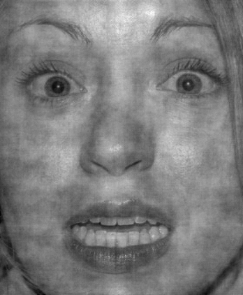

<!doctype html>
<html>
    <head>
        <title>My experiment</title>
        <script src="https://ajax.googleapis.com/ajax/libs/jquery/1.11.1/jquery.min.js"></script>
        <script src="jspsych-5.0.3/jspsych.js"></script>
        <script src="jspsych-5.0.3/plugins/jspsych-text.js"></script>
        <script src="jspsych-5.0.3/plugins/jspsych-single-stim.js"></script>
        <script src="jspsych-5.0.3/plugins/jspsych-multi-stim-multi-response.js"></script>
        <script src="jspsych-5.0.3/plugins/jspsych-categorize-animation.js"></script>
        <script src="faces.js"></script>
        <link href="jspsych-5.0.3/css/jspsych.css" rel="stylesheet" type="text/css"></link>
        <link href="jsscenter.css" rel="stylesheet" type="text/css"></link>
    </head>
    <body>
    </body>
    <script> 


          //-------------------------------//
         //-------Parameters Start--------//
        //-------------------------------//

        //Trial parameters
        var nPracticeTrials = 4; //Must be a multiple of 4 to be counterbalanced properly
        var nRealTrials = 4; //Must be a multiple of 4 to be counterbalanced properly

        //Timing variables
        var minPostTrialGap = 500; //Minimum gap after a trial in ms
        var maxPostTrialGap = 1500; //Maximum gap after a trial in ms
        var sampleFrameTime = 1000; //How long the sample images are displayed for in ms
        var realPresentationTime =  500; //How long to present the stimulus for in ms
        var timeForResponse = 4000; //How long to wait for the subject to give a response
        var fixationCrossTime = 1000; //How long the fixation cross will be displayed on the screen

        //Other variables
        var happyKey = key('h');
        var fearfulKey = key('f');
        var firstKey = key('1');
        var secondKey = key('2');
        
          //-----------------------------//
         //-------Parameters End--------//
        //-----------------------------//

        //Create a variable that stores all the faces in a map structure for easy accessibility
        var faceMap = {}; //faceMap can be accessed like this: faceMap["H"]["01"], which returns an array
        
        //Fill in the faceMap
        createFaceMap();
        console.log(faceMap);
        
        //Make the instructions
        var instructionsBlock = makeInstructions();
        
        //Make the Example block
        var exampleBlock = makeExampleBlock();
        
        //Make the prompt for practice
        var practiceTrialsPrompt = makePracticeTrialsPrompt();
        
        //Make the array of practice trials
        var practiceTrialsBlock = makeTrials("practice");
        
        //Make the prompt for the real trials
        var realTrialsPrompt = makeRealTrialsPrompt()
        
        //Make the array of real trials
        var realTrialsBlock = makeTrials("real");
        
        

        //The timeline for the main experiment
        var timeline = []
        timeline.push(instructionsBlock);
        timeline.push(exampleBlock);
        timeline.push(practiceTrialsPrompt);
        timeline.push(practiceTrialsBlock);
        timeline.push(realTrialsPrompt);
        timeline.push(realTrialsBlock);
        
        console.log("timeline:");
        console.log(timeline);

        jsPsych.init({
            timeline: timeline,
            on_finish: function(){ //Execute this when the experiment finishes
                jsPsych.data.localSave('testSave.csv', 'csv'); //Save the data locally in a .csv file
                jsPsych.data.displayData(); //Display the data onto the browser screen
          }
        });


        //-------------------------------------
        //------Functions below this line------
        //-------------------------------------


        //Parses the name of the image file and store it as an object. Object is returned
        function parseName(image) {
          // This part made by Steven Weiss, it's regex magic, just ignore it.
          //note to self: this is just taking out certain characters and creating an array for each letter of "HFN"
          var extractedGroups = image.match(/([HFN])([0-9]+)_([0-9]+)/);
          //console.log(extractedGroups);
          var category = extractedGroups[1];
          // Treat zero intensity images as neutral
          if (extractedGroups[3] == 0) {
            category = "N";
          }
          //Return the object with the data that we want
          return {
            // "H" if happy, "F" if fearful, "N" if neutral
            category: category,
            person: extractedGroups[2],
            intensity: extractedGroups[3],
            image_file: image
          };
        }

        //Function that uses faces.js to fill in the faceMap
        function createFaceMap(){
            //faces is an array of paths to individual images in faces.js
            for (i = 0; i < faces.length; i++) {
              var face = parseName(faces[i]); //face is the object that is returned from the parseName function above
              // Create the maps if they don't exist
              if (!faceMap[face.category]) {
                faceMap[face.category] = {}
              }
              if (!faceMap[face.category][face.person]) {
                faceMap[face.category][face.person] = []
              }
              //Set the maps
              faceMap[face.category][face.person].push(face.image_file);
            }
        }

        //Function that makes the instructions for the experiment
        function makeInstructions(){
            
            var welcomeText = 'Welcome to the experiment! Please maximize the window you currently have open. When you are ready, press any key to begin.';

            var instructionsText1 = '<div>' +
              '<p>In this experiment, two faces will flash briefly at the center ' +
              'of the screen, one after the other.</p>'+
              '<p> You will then be asked to judge if the faces were happy or fearful.' +
              '<p>If the face was a <strong>happy</strong> face, ' +
              'press the letter H on the keyboard.</p>' +
              '<p>If the face was a <strong>fearful</strong> face, press ' +
              'the letter F on the keyboard.</p>' +
              "<div class='left center-content'></img>" +
              "<p class='small'><strong>Press the F key</strong></p></div>" +
              "<div class='right center-content'></img>" +
              "<p class='small'><strong> Press the H key</strong></p></div>" +
              "<p>Press any key to continue.</p>" +
              '</div>';

            var instructionsText2 = '<div>' +
              '<p> Prior to judging whether the faces were happy or fearful, you will be asked to rate '+
              'which response you feel more confident in. If you feel that you are more confident in your first response, ' +
              'press <strong>1</strong>.</p>' +
              '<p> If you feel more confident in your second response, press <strong>2</strong>.</p>' +
              '<p> To reiterate the steps in the experiment:</p>' +
              '<p> 1. Look at the cross and wait for the faces to appear, one after the other.</p>'+
              '<p> 2. Rate which face judgment you feel more confident in.</p>' +
              '<p> 3. Indicate if the first face was happy or fearful, and if the second face was happy or fearful.</p>' +
              '<p> Press any key to continue</p>' +
              '</div>';

            var instructionsText3 = '<div>' +
              '<p> One last thing, the pairing of the faces may be: </p><p> 1. "happy & happy" </p><p> 2. "fearful & fearful" </p><p> 3. "happy & fearful" </p><p> 4. "fearful & happy".  </p>';

            return {
                type: 'text',
                timeline: [
                    {text: welcomeText},
                    {text: instructionsText1},
                    {text: instructionsText2},
                    {text: instructionsText3}
                ]
            };
        }//End of makeInstructions()
        
        
        //Function to make the prompt before the real trials
        function makeRealTrialsPrompt(){
          return {
            type: 'text',
            text: '<p> This is the real experiment.</p>' + 
            '<p>press any button to begin. </p>'
          };
        }
        
        //Function to make prompt before the practice trials
        function makePracticeTrialsPrompt(){
          return {
            type: 'text',
            text: '<p> This is a short practice session that will be exactly like the actual task.</p>' + 
            '<p> Always keep your focus on the cross at the center of the screen. </p>' + 
            '<p>Press any key to begin.</p>'
          };
        }

        

        //Function to make the sample categorization
        function makeExampleBlock(){

            //Make the happy face
            var happyFaceExample = {
              type: 'categorize-animation',
              stimuli: ["img/H01_100.png"],
              timing_post_trial: calculatePostTrialGap(),
              choices: [happyKey, fearfulKey],
              key_answer: happyKey,
              text_answer: 'happy',
              correct_text: 'Correct! This was a %ANS% face.',
              incorrect_text: 'Incorrect. This was a %ANS% face.',
              frame_time: sampleFrameTime
            };

            //Make the fearful face
            var fearfulFaceExample = {
              type: 'categorize-animation',
              stimuli: ["img/F01_100.png"],
              timing_post_trial: calculatePostTrialGap(),
              choices: [happyKey, fearfulKey],
              key_answer: fearfulKey,
              text_answer: 'fearful',
              correct_text: 'Correct! This was a %ANS% face.',
              incorrect_text: 'Incorrect. This was a %ANS% face.',
              frame_time: sampleFrameTime
            };

            //Shuffle the faces and place them in an array
            var exampleStimuli = jsPsych.randomization.repeat([happyFaceExample, fearfulFaceExample], 1);
            
            //Make the single-stim object to house the categorization animation, and include the prompt in between the stimuli and feedback
            //How does this work??? But it does work.
            var exampleBlockWithoutInstructions = {
                type: 'single-stim',
                prompt:'<p>Indicate whether the face is <strong>fearful</strong> or <strong>happy</strong>',
                choices: [fearfulKey,happyKey],
                timeline: exampleStimuli
            };
            
            //The prompt for the start of the example
            var examplePrompt = {
                type: 'text',
                text: '<p> This is a short example to help you get familiarized with the faces.</p>'+
                    '<p> Press any key to begin.</p>'
            };
            
            //The prompt for the end of the example
            var exampleDebrief = {
                type: 'text',
                text: '<p>This is the end of the sample, press any key to begin the practice block.</p>'
            };
            
            //Make the whole example block and return it
            return {
                timeline: [
                    examplePrompt,
                    exampleBlockWithoutInstructions,
                    exampleDebrief
                ]
            };


        }//End of makeExampleBlock()
        
        
        //Make a random permutation based on the number of trials
        function makeTagArray(trialType){
            
            //Set the correct number of trials
            if(trialType === "real"){
              var n = nRealTrials;
            }
            else if(trialType == "practice"){
              var n = nPracticeTrials;
            }
            
            //Check that the number of trials is divisible by 4
            if(n % 4 != 0){
                //Alert the user to make the changes to counterbalance properly
                alert('Counterbalancing must be done. Please set the number of ' + trialType + ' trials to a multiple of 4.');
            }
            //If the trials are divisible by 4, then make the array
            else{
                //Make the temporary array
                var tempArray = [];
                
                //Fill in the array with the number of trials
                for(var i = 0; i < n; i++){
                    tempArray.push(i);
                }
                
                //Shuffle the array
                tempArray = jsPsych.randomization.shuffle(tempArray);
                
                //return the shuffled tagArray
                return tempArray;
            }
        }
        
        function makeTrials(trialType){
            
            
            var tagArray = makeTagArray(trialType);
            
        /*    //Set the number of trials based on whether this is a practice trial or real trial
            if(trialType === "real"){
              var tagArray = realTagArray;
            }
            else if(trialType === "practice"){
              var tagArray = practiceTagArray;
            }
        */  
          
          
            //Declare a new array for the trials
            var outerArray = [];
            
            //Make a generic fixation cross to be used
            var fixationCross = makeFixationCross();
            
            //For loop that goes through all the tags and makes a trial for each tag
            for (var i = 0; i < tagArray.length; i++){
                
                //Declare an array to hold the trial (which consists of 7 single stim objects)
                var innerArray = [];
                
                //Load in the current tag for easy handling
                var tag = tagArray[i];
                
                //Variable to store the target presentation
                var targetOrder = determineTargetOrder(tag, tagArray.length, trialType);
                
                //Variable to store the emotion of the target face (real trials), or the emotion of the first face (practice trials) 
                var emotion = determineTargetEmotion(tag, tagArray.length);
                
                //Make the presentation pair
                var presentationPair = makePresentationPair(targetOrder, emotion, i, tag, trialType);
              
                
                //Push everything into the array
                innerArray.push(fixationCross);
                innerArray.push(presentationPair[0]);
                innerArray.push(fixationCross);
                innerArray.push(presentationPair[1]);
                innerArray.push(makeConfidencePrompt(targetOrder, emotion, i, tag, trialType));
                innerArray.push(makeJudgmentPrompt(targetOrder, emotion, i, tag, trialType, 1));
                innerArray.push(makeJudgmentPrompt(targetOrder, emotion, i, tag, trialType, 2));
                
                var currentTrialObject = {
                  timeline: innerArray
                }
                
                //Push the array of single stim objects into the outer array
                outerArray.push(currentTrialObject);
                
                
            }//End of for loop
            
            //Return the array of all the real trials
            return {
              type: 'single-stim',
              timeline: outerArray
            }
            
        } //End of makeRealTrials
        
        //Function to make the pair of presentations within a trial
        function makePresentationPair(targetOrder, emotion, trialNumber, tag, trialType){
            
            //Go down the decision tree to determine what emotions are in the first and second presentations
            /*Binary decision tree levels: 
           
            
                                ---> same
                  --->practice 
                                ---> different
            Start                              ***[Last level is happy/fearful for each of the 4 branches]***
                                ---> first
                  --->real 
                                ---> second
                                
            
            */
            
            //If it is a practice trial
            if(trialType === "practice"){
              
              //Data: face type is practice
              var faceType1 = "practice";
              var faceType2 = "practice";
              
              //If the emotions are the same
              if(targetOrder === "same"){
                //If the emotion is happy
                if(emotion === "happy"){
                  //Then both of the presentations are happy
                  var emotionIndex1 = "H";
                  var emotionIndex2 = "H";
                  
                  var emotion1 = "happy";
                  var emotion2 = "happy";
                  
                  
                }
                //Else if the emotion is fearful
                else if (emotion === "fearful"){
                  //Then both of them are fearful
                  var emotionIndex1 = "F";
                  var emotionIndex2 = "F";
                  
                  var emotion1 = "fearful";
                  var emotion2 = "fearful";
                }
              }
              //Else if the emotions are different
              if(targetOrder === "different"){
                //If the emotion is happy
                if(emotion === "happy"){
                  //Then the first presentation is happy and the second is fearful
                  var emotionIndex1 = "H";
                  var emotionIndex2 = "F";
                  
                  var emotion1 = "happy";
                  var emotion2 = "fearful";
                }
                //Else if the emotion is fearful
                else if (emotion === "fearful"){
                  //Then the first presentation is fearful and the second is happy
                  var emotionIndex1 = "F";
                  var emotionIndex2 = "H";
                  
                  var emotion1 = "fearful";
                  var emotion2 = "happy";
                }
              }
            }
            //Else if it is a real trial
            if(trialType === "real"){
              //If the emotions are the same
              if(targetOrder === "first"){
                
                //Data: First face type is target, and second is non-target
                var faceType1 = "target";
                var faceType2 = "non-target";
                
                //If the emotion is happy
                if(emotion === "happy"){
                  //Then the first presentation is happy and the second is neutral
                  var emotionIndex1 = "H";
                  var emotionIndex2 = "N";
                  
                  var emotion1 = "happy";
                  var emotion2 = "neutral";
                }
                //Else if the emotion is fearful
                else if (emotion === "fearful"){
                  //Then the first presentation is fearful and the second is neutral
                  var emotionIndex1 = "F";
                  var emotionIndex2 = "N";
                  
                  var emotion1 = "fearful";
                  var emotion2 = "neutral";
                }
              }
              //Else if the emotions are different
              if(targetOrder === "second"){
                
                //Data: First face type is non-target, and second is target
                var faceType1 = "non-target";
                var faceType2 = "target";
                
                //If the emotion is happy
                if(emotion === "happy"){
                  //Then the first presentation is neutral and the second is happy
                  var emotionIndex1 = "N";
                  var emotionIndex2 = "H";
                  
                  var emotion1 = "neutral";
                  var emotion2 = "happy";
                }
                //Else if the emotion is fearful
                else if (emotion === "fearful"){
                  //Then the first presentation is neutral and the second is fearful
                  var emotionIndex1 = "N";
                  var emotionIndex2 = "F";
                  
                  var emotion1 = "neutral";
                  var emotion2 = "fearful";
                }
              }
            }
            
            
            
            //Get the array of possible people
            var possiblePeople1 = Object.keys(faceMap[emotionIndex1]);
            var possiblePeople2 = Object.keys(faceMap[emotionIndex2]);
            
            //Randomly choose from one of the possible emotion people
            var person1 = jsPsych.randomization.sample(possiblePeople1,1)[0];
            
            //Flag to make sure that we don't choose the same person
            var samePerson = true;
            
            //While loop to choose the neutral person, making sure that it is not the same as the emotion person
            while(samePerson){
              
                //Randomly pick the second person from list of the possible people people
                var person2 = jsPsych.randomization.sample(possiblePeople2,1)[0];
                
                //Check to make sure that it is not the same person
                if(person2 != person1){
                    samePerson = false;
                }
            }
            
            //Pick out the paths to the respective faces with a random intensity
            var face1 = jsPsych.randomization.sample(faceMap[emotionIndex1][person1],1)[0];
            var face2 = jsPsych.randomization.sample(faceMap[emotionIndex2][person2],1)[0];
            
            //[Reminder] Might want to take into account the intensity. Currently unlogged except in the stimulus data
            
            //Make the first face object
            var faceObject1 = {
                type: 'single-stim',
                stimulus: face1,
                timing_stim: realPresentationTime,
                timing_response: realPresentationTime,
                response_ends_trial: false,
                on_finish: function(data){
                  console.log(trialType);
                  console.log(targetOrder);
                  console.log(face1);
                },
                data: {
                    faceType: faceType1,
                    faceEmotion: emotion1,
                    trialEmotion: emotion,
                    person: person1,
                    trialType: trialType,
                    trialNumber: trialNumber,
                    tag: tag,
                    targetOrder: targetOrder
                }
            }
            
            //Make the second face object
            var faceObject2 = {
                type: 'single-stim',
                stimulus: face2,
                timing_stim: realPresentationTime,
                timing_response: realPresentationTime,
                response_ends_trial: false,
                on_finish: function(data){
                  console.log(face2);
                  console.log('------------------');
                },
                data: {
                    faceType: faceType2,
                    faceEmotion: emotion2,
                    trialEmotion: emotion,
                    person: person2,
                    trialType: trialType,
                    trialNumber: trialNumber,
                    tag: tag,
                    targetOrder: targetOrder
                }
            }
            
            //Return both of them in an array
            return [faceObject1, faceObject2];
            
            
        }//End of makePresentationPair
        
        //Function to make the confidence question
        function makeConfidencePrompt(targetOrder, emotion, trialNumber, tag, trialType){
            return {
                type: 'single-stim',
                stimulus: "",
                prompt: 'Which answer do you feel more confident in?',
                is_html: true,
                timing_response: timeForResponse,
                choices: [firstKey, secondKey],
                data: {
                    trialEmotion: emotion,
                    trialType: trialType,
                    trialNumber: trialNumber,
                    tag: tag,
                    targetOrder: targetOrder
                }
                
            };
        }
        
        //Function to make the judgment prompt
        function makeJudgmentPrompt(targetOrder, emotion, trialNumber, tag, trialType, judgmentNumber){
            
            //Variable to hold the inquiryNumber
            var inquiryNumber;
            //Initialize the inquiry number
            if(judgmentNumber === 1){
                inquiryNumber = "first";
            }
            else if(judgmentNumber === 2){
                inquiryNumber = "second";
            }
            
            var prompt = "Is the " + inquiryNumber + " face happy or fearful?";
            
            return {
                type: 'single-stim',
                stimulus: "",
                prompt: prompt,
                is_html: true,
                timing_response: timeForResponse,
                choices: [happyKey, fearfulKey],
                data: {
                    trialEmotion: emotion,
                    trialType: trialType,
                    trialNumber: trialNumber,
                    tag: tag,
                    targetOrder: targetOrder
                }
            };
        }//End of makeJudgmentPrompt
        
        
        
        
        //---------Convenience Functions--------
        
        //Function to determine the order of targetPresentation
        function determineTargetOrder(tag, n, trialType){
            
            //If it is in the first half, then the target is presented in the FIRST presentation (real trials), or they are the SAME emotion (practice trials)
            if(tag < n/2){
                if(trialType === "real"){
                  return "first";
                }
                else if(trialType === "practice"){
                  return "same";
                }
                
            }
            //If it is in the second half, then the target is presented in the SECOND presentation (real trials), or they are the DIFFERENT emotion (practice trials)
            else if(tag >= n/2){
                if(trialType === "real"){
                  return "second";
                }
                else if(trialType === "practice"){
                  return "different";
                }
            }
        }
        
        //Function to determine the emotion of the target face
        function determineTargetEmotion(tag, n){
            
            //If the tag is in the first or third quartile, then it is a happy face
            if( tag < n/4 || (tag >= n/2 && tag < 3*n/4) ){
                return "happy";
            }
            //If the tag is in the second or fourth quartile, then it is a fearful face
            else if( (tag >= n/4 && tag < n/2) || tag >= 3*n/4){
                return "fearful";
            }
        }

        //Function to make the post_trial_gap
        function calculatePostTrialGap(){
            return Math.floor( Math.random()*(maxPostTrialGap-minPostTrialGap) ) + minPostTrialGap;
        }

        //Function to make get the key code from a char
        function key(character) {
            return jsPsych.pluginAPI.convertKeyCharacterToKeyCode(character);
        };
        
        //Function that makes a fixation cross
        function makeFixationCross(){
            return {
                type: 'single-stim',
                stimulus: '<span class="big-font">+</span>', 
                is_html: true, 
                timing_stim: fixationCrossTime, 
                timing_response: fixationCrossTime,
                response_ends_trial: false
            };
        }


    </script>
</html>